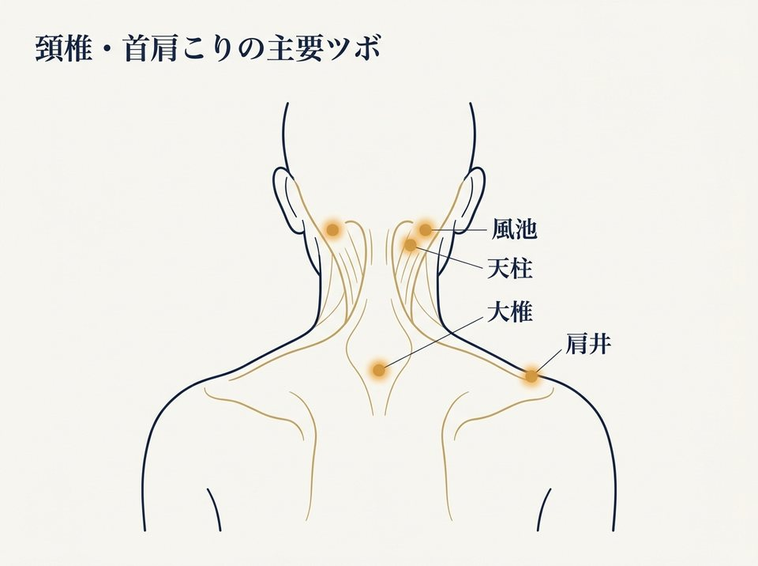

むち打ち後遺症の鍼灸
交通事故などの衝撃で首に起きる損傷と後遺症。医師の診断・治療を基本に、深層筋の緊張と自律神経を鍼灸で整えます。


院長YouTube解説・関連動画
むち打ち後遺症とは交通事故の後遺症
むち打ち後遺症は、交通事故などの追突や衝突によって首の急激な過伸展、過屈曲運動が起きたために生じる首の損傷のことです。症状がちょうどムチのしなるような状態での首振り現象から起こるのでこの名で呼ばれています。
医学上の病名では、「頚椎捻挫」「頸部挫傷」「外傷性頚部症候群」などと呼ばれます。
むち打ち後遺症は事故直後に出るとは限らず、事故から一定期間を経過してから症状が現れる可能性もあります。
下記に記載の症状を参照の上、医師の判断に従って継続的な改善を続けていくことが大切です。後遺症が「後遺障害等級として評価されるものなのか」を手続きによって明らかにしていくことが必要になります。
むち打ち後遺症の症状は様々
むち打ち後遺症の症状は多岐にわたります。多く見られる症状には頭痛、首の痛み、首の運動制限、目の極度な疲れ、視力障害、耳鳴り、上下肢のしびれ感、首・肩の凝り、めまい、吐き気や疲労感等が見られます。
しかし多くの場合これら自覚症状は、レントゲンや脳波などを調べた結果に現れる他覚的所見に乏しいです。
・頸部、肩、背中の痛みやこり
慢性的な首の痛みやこり、肩こりや背中の張りが続く、首を動かすと痛みが増す、天気が悪いと症状が悪化する
後頭部～側頭部にかけての鈍い痛み、肩や首の筋緊張による緊張型頭痛、首の神経圧迫による片頭痛
・めまい、ふらつき
立ち上がるとフラフラする、車酔いしやすくなる、グルグル回るような回転性のめまい、足元がふわふわする浮動性めまい
・耳鳴り、難聴
「キーン」「ジー」といった耳鳴り、耳が詰まったような違和感、聞こえが悪くなる
・視覚異常（目の疲れ・かすみ・ピントが合わない）
目がかすむ、ピントが合いづらい、目が疲れやすくなる、光がまぶしく感じる
・自律神経の乱れ（倦怠感・睡眠障害・冷え）
疲れやすく常にだるい、不眠、手足の冷え
・動悸や息切れ
胃腸の不調
・手足のしびれ、神経症状
指先のしびれや感覚異常、握力低下、足のしびれや脱力感、長時間立っていると足がだるくなる
・記憶力、集中力の低下
頭がボーッとする、考えがまとまりにくい、物忘れが増える、集中力が続かない
・精神的な影響（不安・うつ・イライラ）
不安感が強くなる、気分の落ち込みが続く、イライラしやすくなる、パニック発作
頚椎の捻挫
むち打ち後遺症の症状の大部分を占めていて、首や肩、背中の痛みと凝りなどが見られる。
バレー・ルー症状
首の神経が傷ついたことにより、頭痛・めまい・吐き気・耳鳴り・息切れ・後頭部の痛みに伴う倦怠感や食欲不振。
神経根症状
手足のしびれや力が入らないといった症状。首の神経根と呼ばれる部分に負荷がかかった状態を指す。
脳脊髄液減少症
脳髄液が漏れ出すケースで症状としては重い。
全身の痛み・五感の障害・自律神経症など。
脊髄症状
脊髄損傷を伴うもので、五感に悪影響を起こす。
歩行障害や知覚障害など。
高次脳機能障害
脳の損傷によって、記憶障害や注意障害など日常生活に支障が出る症状が特徴。
性格が変わる、集中力が続かないといった症状が見られる。
むち打ち後遺症の改善方法
そもそも「後遺症」とは改善を続けても、完全な回復が見込めない症状のことを指しています。当院では、上記に記載したむち打ち後遺症で生じる主な症状に対応しています。
めまい・吐き気・耳鳴り・目の疲れなどの症状に対し、自律神経系のバランス調整、痛みの緩和、筋肉の緊張を緩和し、血行を促進することで、改善を図ります。
・整形外科の場合
レントゲンやMRIで頸椎の状態を確認し痛み止めや筋弛緩薬の処方を行います。痛みが強い場合は神経ブロック注射を行います。
・整体、カイロプラクティックの場合
首や背骨の歪みを調整して神経の圧迫を軽減します。肩や首の可動域を改善し、血流を促進します。
・鍼灸の場合
頸部の血流改善、筋緊張の緩和を行います。自律神経のバランスを整え、めまいや頭痛の軽減を図ります。
事故によるむち打ち後遺症の場合「後遺障害」と言って負ったけがや障害が、改善を続けても改善しない「症状固定」の状態になったものもあります。後遺症のうち一定の要件をクリアしたものが後遺障害として認められます。
認定は、医師が作成した書類をもとに、損害保険料率算出機構・自賠責損害調査事務所が行います。後遺障害と認定されれば、症状に応じた慰謝料の請求が可能なため、ご自身が当てはまるかどうか見ていく必要があります。
「自動車損害賠償保障法施行令別表（等級表）」によって、１～14級までの等級が定められており、具体的な症状が公表されています。
むちうちの場合、「局部に頑固な神経症状を残すもの（12級13号）」もしくは「局部に神経症状を残すもの（14級９号）」にあてはまるケースが多いです。
・障害局所の存在が医学的に証明できる
・他覚的所見として画像診断や神経学的所見などが認められたもの
・医学的に可能な説明ができ、障害を残す所見がある
むちうちの後遺症によって請求できる慰謝料は、以下のような金額です。
手足のしびれや首の痛みといったむちうちの一般的な症状よりも重く、記憶障害や注意障害など日常生活に支障をきたす高次脳機能障害の症状が見られれば、等級はさらに高くなる可能性もあり、請求できる慰謝料も異なってくる場合があります。
むちうちは「軽度」「中等度」「重度」**に分けられ、それぞれの回復期間は異なります。
・軽症の場合（2週間～1ヶ月）
筋肉の炎症や軽い捻挫程度であれば、適切な対応で比較的早く改善します。ストレッチや軽いリハビリを続けることで後遺症を防げます。
・中等度の場合（1ヶ月～3ヶ月）
頸椎の靭帯や関節包が損傷していると、回復に時間がかかります。放置すると筋肉が固まり、慢性的な首こりや頭痛、めまいの後遺症が残る可能性があります。
・重症の場合（3ヶ月～半年以上）
神経圧迫や自律神経の影響があると、長期間回復しないことがあります。しびれや倦怠感が長引く場合、リハビリや整体、鍼灸を併用するのが効果的です。
🎥 他のYouTube切り抜き・解説を読む（あと1件）▼
20歳の時の交通事故の後遺症にお悩みのOさん
事故による首の痛み、膝の痛み。20歳の時に交通事故にあって3ヶ月後にもう1回交通事故に遭ってそこから首がかたくなって定期的にバットで殴られたような痛みが起こる。コリだすと痛みが出てくる状態で、その都度鍼やマッサージで回復するしかない状態。
特に左首の付け根と右膝が痛い。
・来院のきっかけ
インスタで施術の動画がでて良くなるかなと思って来院した。仲の良い友人がインスタに出ていてその友人に連絡した。
・今までの鍼の経験
週１〜２で鍼には必ず行っている。
・他の鍼灸院との違い
針には毎週行っているが全然違った。ちゃんとしている感じがした。打った瞬間で違いを感じた。剥がす時の音なども違い、どう作用するのか初めてなのでドキドキだが、30年首の痛みに悩まされてきたのでよくなればいいなと思う。
・日常生活で１番辛いこと
バットで殴られたような痛みが辛く、寝ても経っても痛いため痛み止めを飲んで過ごすしかない状況。そんな状況を少しでも改善できたらと藁をも縋る思いで来院した。
交通事故で鞭打ちして筋肉が繊維化して今の状態が起こっています。悪いところの繊維を1回切り刻んで正常に戻していく施術を行います。
電気刺激も行い悪いところにさらに刺激を与えていきます。首には６cmくらいの鍼を刺しそぐように削っていきます。電気の相性を考え後半は鍼刺激のみで施術を行いました。
今日の状態は良かったため自覚症状が出にくくなると良い状態に持っていけると見ています。膝は悪いところが１箇所だったためそこをみっちり行いました。
経過としては、１〜２週間後に良くなります。１週間は気だるくなると思うが、だんだん引いていき１週間後に気だるさや突っ張った感じが出にくくなると嬉しいです。
▼ 詳しく知りたい項目だけタップして開けます（全項目の医学解説を収録）
01. 原因とメカニズム
なぜ症状が起きるのか・鍼灸の作用機序を読む
▼
01. 原因とメカニズム
なぜ症状が起きるのか・鍼灸の作用機序を読む
追突や衝突の衝撃で首が急激に過伸展・過屈曲し、筋肉・靭帯・関節包・神経根などに損傷が生じる状態です（医学的には頚椎捻挫・外傷性頚部症候群など）。事故直後ではなく一定期間を経て発症することも多く、筋肉の線維化や神経・自律神経への影響（バレー・ルー症状など）により多彩な後遺症が長引くことがあります。
なぜ鍼灸で改善へ向かうのか？（作用機序の図解）
むち打ち後遺症に対する鍼灸は、トリガーポイント解放と疼痛抑制系の作用機序を通じて、お体本来の回復力を引き出します。
手技では届きにくい深層筋の硬結（トリガーポイント）へ繊細な鍼で直接刺激を届けます。
CGRPや一酸化窒素の放出により微小血管が拡張し、滞っていた発痛物質の洗い流しを促します。
脊髄後角で痛み信号を遮断し、脳幹からの内因性鎮痛物質（エンドルフィン等）の働きを高めます。
防御性の筋スパズムが解け、関節可動域と本来の動きやすさが段階的に回復します。
02. よくあるお悩み
このような症状はありませんか？（4項目）
▼
02. よくあるお悩み
このような症状はありませんか？（4項目）
- ✓事故後から首・肩・背中の痛みやこりが長引いている
- ✓頭痛やめまい、耳鳴り、目の疲れ・かすみが出ている
- ✓手足のしびれや脱力感、冷え・不眠など自律神経症状がある
- ✓画像検査で異常が少ないのに集中力低下や倦怠感が続く
03. 当院の施術アプローチ
施術の進め方・改善のポイントを見る
▼
03. 当院の施術アプローチ
施術の進め方・改善のポイントを見る
04. ツボ詳細・セルフケア一覧
首・肩・上腕のツボ図解とセルフケア（6穴）
▼
04. ツボ詳細・セルフケア一覧
首・肩・上腕のツボ図解とセルフケア（6穴）
実際の施術ではお一人おひとりの体質・症状に合わせて選穴しますが、首・肩・上腕（肩関節・頸椎・肩甲帯）の筋骨格系トラブルの臨床でよく用いられる代表的なツボの目安です。
| ツボ名 | 位置の目安 | 主な狙い | セルフケアの注意点 |
|---|---|---|---|
| 肩髃（けんぐう） | 腕を横に挙げたときに肩の前の角にできるくぼみ | 上腕二頭筋長頭腱炎・五十肩・肩関節周囲の痛みと可動域改善 | 炎症や夜間痛が強い時期は強く揉み込まず、温めや軽い圧迫に留めます。 |
| 臂臑（ひじゅ） | 肩の三角筋の先端（腕の外側の境目のくぼみ） | 上腕の重だるさ・腕を上げる際の引っかかり感・肩関節の負担軽減 | 骨に向かって垂直に3〜5秒じんわり押す程度が安全です。 |
| 天宗（てんそう） | 肩甲骨のほぼ中央、押すと響くくぼみ | 肩甲骨周囲の深層筋（棘下筋）の緊張緩和・腕への放散痛ケア | テニスボール等で強く押しすぎず、心地よい響きで止めます。 |
| 肩井（けんせい） | 首の付け根と肩先を結んだ線の中央 | 僧帽筋の過緊張緩和・首肩のこりや張り改善 | 妊娠中の方は強い刺激を避け、優しく温める程度にしてください。 |
| 風池（ふうち） | 後頭部の生え際、耳の後ろの骨と首筋の間のくぼみ | 頸椎周囲の深層筋緊張・首こり・肩腕への神経負担緩和 | 親指で頭の中心に向かって優しく支えるように押します。 |
| 曲池（きょくち） | 肘を曲げたときにできる外側のシワの先端 | 上腕〜前腕の筋膜連動の調整・肩肘の炎症・だるさ軽減 | 反対側の親指でゆっくり5秒押して離すリズムで行います。 |
05. 医学的根拠・国際査読論文（PubMed / Cochrane）
科学的エビデンス・出典リンク一覧（3件）
▼
05. 医学的根拠・国際査読論文（PubMed / Cochrane）
科学的エビデンス・出典リンク一覧（3件）
国際的な医学データベース（PubMed・Cochrane等）で報告されている首痛・肩こり・五十肩・背部領域の代表的な査読済み鍼灸研究をまとめています（標準治療との併用や研究上の限界を含めて正確に掲載）。
| 年・研究デザイン | 対象・規模 | 主な結果 | 限界・出典 |
|---|---|---|---|
| 2025年 メタ解析（TSA付） | 成人頸部痛 26 RCTs（n=3,520） | 通常治療で十分な改善が得られない頸部痛に対し安全かつ有効な選択肢を示唆。 | 試験間の異質性が高くエビデンスの質は低〜中等度。 PubMed (PMID: 41322280) |
| 2016年 Cochraneレビュー | 慢性頸部障害 | 治療終了時および短期フォローでシャム鍼より疼痛緩和に中等度の質のエビデンス。 | 長期効果のさらなる検証が必要。 Cochrane (PMID: 27145001) |
| 2024年 メタ解析 | 凍結肩（五十肩）13 RCTs（n=1,034） | 疼痛（VAS）や肩関節機能スコア（CMS）の改善を示唆。 | 低質のエビデンスであり厳密なRCTが必要。 Curr Pain Headache Rep (PMID: 39096470) |
参考文献・出典
- 2025年 メタ解析（TSA付）（成人頸部痛 26 RCTs（n=3,520））— PubMed (PMID: 41322280)
- 2016年 Cochraneレビュー（慢性頸部障害）— Cochrane (PMID: 27145001)
- 2024年 メタ解析（凍結肩（五十肩）13 RCTs（n=1,034））— Curr Pain Headache Rep (PMID: 39096470)
06. よくある質問（FAQ）
よくあるご質問を見る（2件）
▼
06. よくある質問（FAQ）
よくあるご質問を見る（2件）
Q. 事故直後は痛くなかったのに後から症状が出ることはありますか？
はい。事故直後の興奮状態が落ち着いた数日後や一定期間経過してから、首の痛み・頭痛・めまい・しびれなどが現れることは珍しくありません。
Q. 回復までどのくらいの期間がかかりますか？
損傷の程度により異なり、軽症で2週間〜1ヶ月、中等度で1〜3ヶ月、重症では3ヶ月〜半年以上かかることもあります。焦らず医師の治療とケアを継続することが大切です。
あわせて読まれる関連疾患（筋肉、骨のお悩み）
お尻から足後ろ側へ広がる痛みやしびれ。原因を見極め、腰・臀部・股関節の深層筋へ的確にアプローチします。
40〜60代に多い肩の激痛・可動域制限（五十肩）を、炎症期と拘縮期の見極めと鍼灸・全身バランス調整で改善する解説。
HTLV-1ウイルス感染者の一部に発症し、脊髄の炎症により両下肢のつっぱり・歩行障害や排尿障害が徐々に進む疾患です。
成長期の中高生がスポーツ中の急激な筋収縮により、骨盤の骨端線付着部で骨の一部が剥がれて起こる骨折です。
免疫系が自身の筋組織を攻撃して炎症と変性を起こし、対称性の筋力低下や筋痛をきたす全身性のリウマチ性疾患群です。
骨端軟骨とその周囲の軟部組織にX線上の点状石灰化像がみられ、低身長や関節・脊柱の異常を伴う遺伝性疾患群の総称です。
CLINICAL RECOVERY CASES
✨ 実際の臨床改善事例・回復経過を見る
銀座本院をはじめ各院での実際の改善事例を症状別に絞り込んでご確認いただけます。
おひとりで悩まず、まずはご相談ください
銀座本院・川口・大宮・横浜・博多・田無の各院でご予約を承っております。